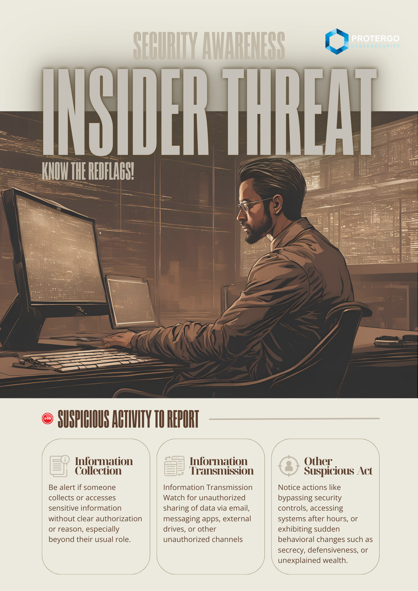
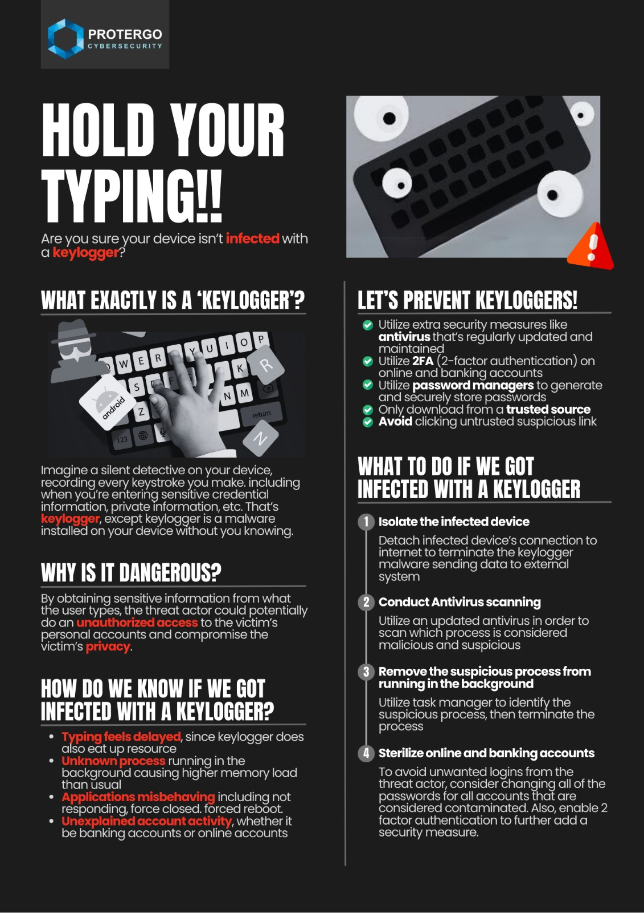
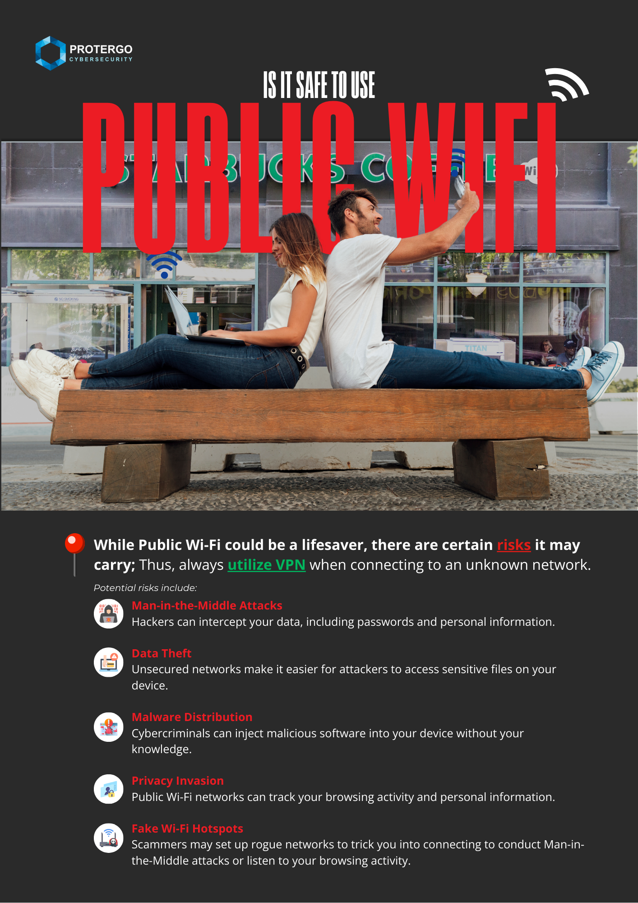
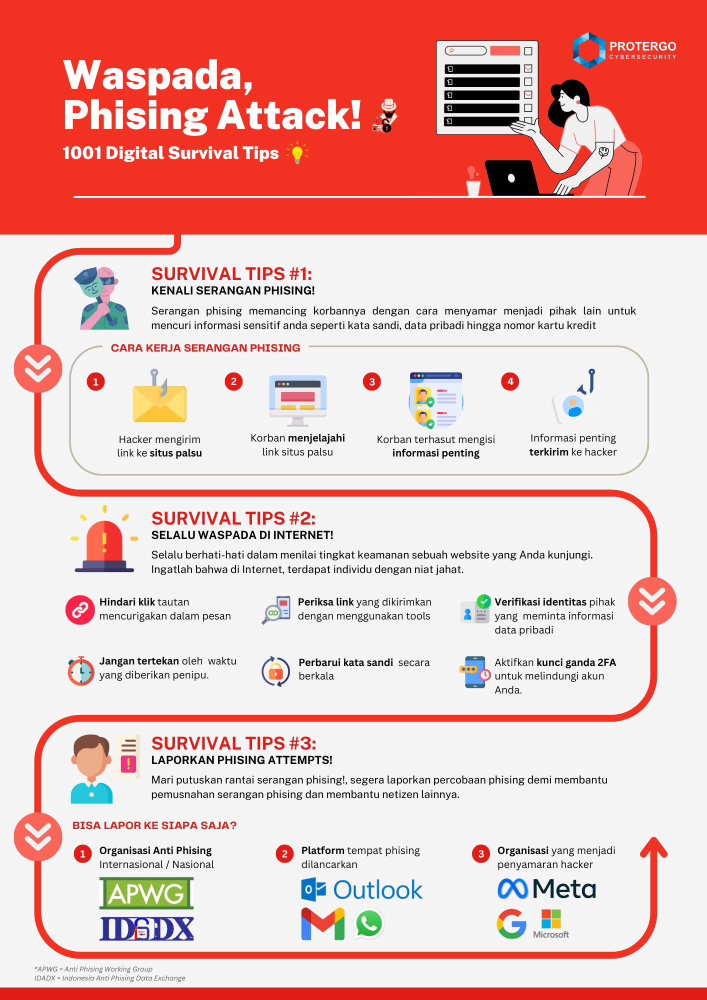

Security Awareness: Insider Threat
Hello Feel Good People
Dalam poster Kesadaran Keamanan ini, kami ingin berbagi informasi mengenai "Insider Threat Awareness":
Insider threat bisa berasal dari individu dalam organisasi yang secara sengaja atau tidak sengaja membahayakan keamanan perusahaan. Tindakan mencurigakan seperti pengumpulan informasi yang tidak relevan dengan tugas, perilaku aneh atau mencurigakan di tempat kerja, serta transmisi informasi sensitif melalui saluran yang tidak resmi perlu diwaspadai. Jika anda melihat tindakan yang tidak biasa seperti ini, segera laporkan ke tim keamanan untuk mencegah ancaman dari dalam yang dapat merugikan perusahaan.
Mari tingkatkan keamanan siber dimulai dari diri anda 🙂
Baca Selengkapnya

Security Awareness: Insider Threat
Hello Feel Good People
Dalam email Kesadaran Keamanan ini, kami ingin berbagi informasi mengenai "Security Awareness: Keylogger":
Keylogger merupakan software yang mampu menyimpan semua input yang diberikan melalui perangkat human interaction seperti keyboard. Awalnya, software ini hanya digunakan untuk keperluan logging activity, namun banyak pihak yang menggunakan software ini untuk kegiatan jahat (malicious). Potensi dampak yang ditimbulkan dari serangan malware keylogger ini sendiri pun cukup tinggi, mulai dari tercurinya informasi data pribadi sensitif, hingga data kredensial akun. Maka dari itu, sangat penting bagi tiap karyawan untuk memiliki awareness terhadap permasalahan ini untuk melindungi aset diri dan perusahaan.
Mari tingkatkan keamanan siber dimulai dari diri anda 🙂
Baca Selengkapnya

Security Awareness: Risiko Public Wi-Fi
Hello Feel Good People,
Dalam email Kesadaran Keamanan ini, kami ingin berbagi informasi mengenai "Security Awareness: Risiko Public Wi-Fi":
Menggunakan jaringan Wi-Fi publik memang nyaman, namun memiliki berbagai risiko keamanan yang perlu diwaspadai. Jaringan ini seringkali tidak aman, sehingga memungkinkan penyerang untuk mencuri informasi pribadi, seperti password atau data sensitif lainnya, melalui serangan Man-in-the-Middle. Selain itu, Wi-Fi publik juga dapat digunakan untuk menyebarkan malware ke perangkat Anda atau bahkan memancing Anda untuk terhubung ke jaringan palsu yang dibuat oleh pelaku kejahatan siber. Risiko ini membuat privasi Anda rentan, sehingga perlu langkah pencegahan agar data pribadi dan perusahaan tetap terlindungi.
Safety Tip: Selalu gunakan VPN saat mengakses Wi-Fi publik dna hindari melakukan transaksi sensitif untuk melindungi diri dan perangkat anda ketika menggunakan layanan Wi-Fi publik.
Mari tingkatkan keamanan siber dimulai dari diri anda 🙂
Baca Selengkapnya

Security Awareness: Phising
Hello Feel Good People,
Dalam email Kesadaran Keamanan ini, kami ingin berbagi informasi mengenai "Security Awareness: Phishing":
Phishing merupakan salah satu taktik serangan siber yang paling umum dijumpai dalam kehidupan sehari - hari. Phishing ini sendiri bertujuan untuk mendapatkan informasi sensitif seperti kredensial, data pribadi, atau data berharga lainnya dari pengguna dengan berbagai cara manipulatif. Biasanya kampanye phishing diselenggarakan di platform komunikasi daring seperti email, whatsapp, dsb. Mengingat risiko yang dan bahaya yang signifikan dari Phishing, penting untuk tiap karyawan mengetahui demi melindungi aset diri sendiri dan perusahaan
Mari tingkatkan keamanan siber dimulai dari diri anda 🙂
Baca Selengkapnya
